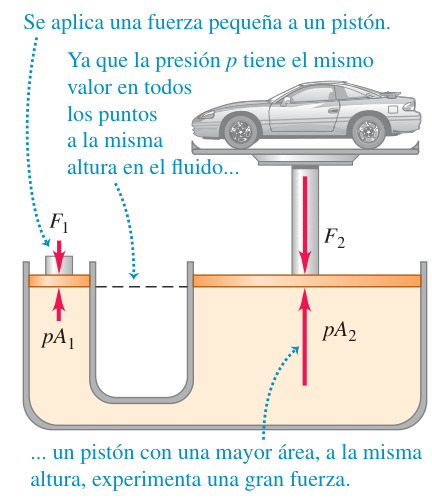
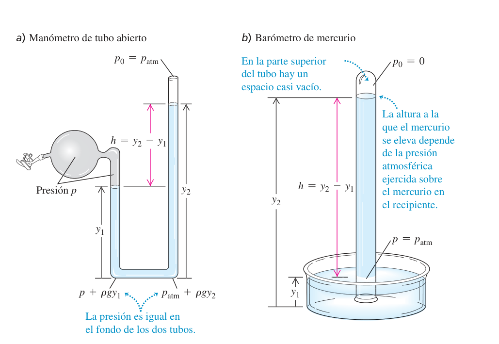
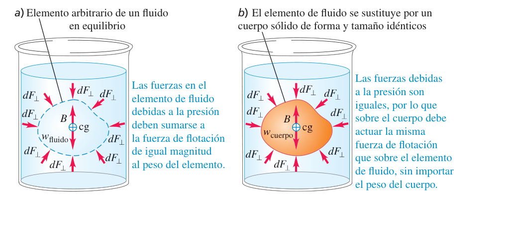
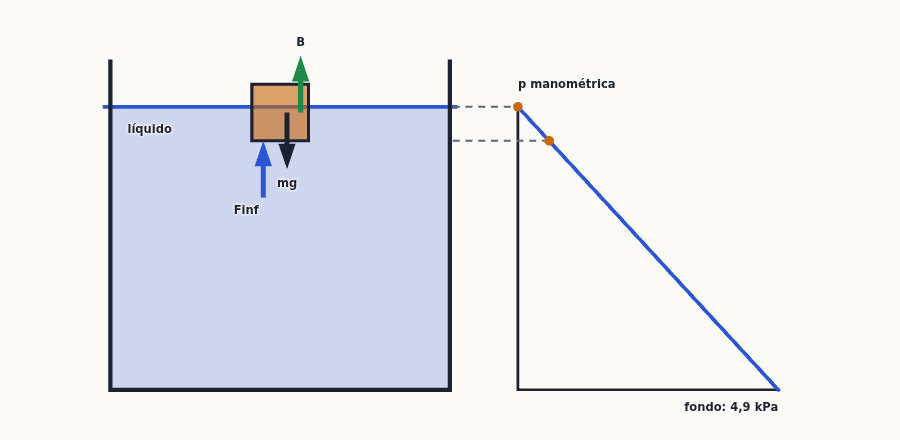
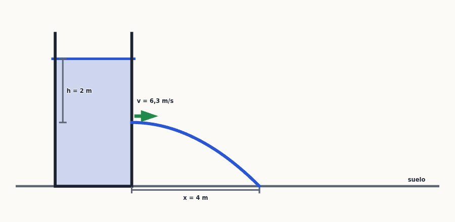
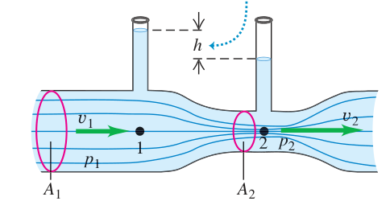

Mecánica de fluidos
Un barco de acero que flota, el agua que sale a chorro de un depósito, un avión que se sostiene en el aire, la sangre que empuja contra las paredes de una arteria: todo son fluidos (líquidos y gases). Este tema tiene dos mitades. Con el fluido en reposo aprenderás qué es la densidad, cómo crece la presión con la profundidad, la ley de Pascal y el principio de Arquímedes. Con el fluido en movimiento, la ecuación de continuidad, la ecuación de Bernoulli (que es, en el fondo, conservación de la energía) y una primera idea de la viscosidad.
0Antes de empezar U p.370
Prerrequisitos: las leyes de Newton y los diagramas de cuerpo libre con equilibrio ($\sum F_y=0$, temas 4 y 5); el trabajo y la energía mecánica (temas 6 y 7), porque la ecuación de Bernoulli es la ley de conservación de la energía aplicada a un fluido; el tiro horizontal (tema 3), para saber dónde cae un chorro; y la idea de presión y de módulo volumétrico del tema 11 ($p=F_\perp/A$, 1 Pa = 1 N/m²).
Mapa del tema: 12.1 define la densidad. 12.2 estudia el fluido en reposo: la presión, cómo crece con la profundidad ($p=p_0+\rho gh$), la ley de Pascal, las presiones absoluta y manométrica y los medidores (manómetro y barómetro). 12.3 es la flotación (principio de Arquímedes). Después el fluido se mueve: 12.4 da la ecuación de continuidad ($A_1v_1=A_2v_2$), 12.5 la ecuación de Bernoulli con sus aplicaciones (teorema de Torricelli, medidor Venturi, sustentación) y 12.6 la viscosidad y la turbulencia. Los ejercicios del libro se reparten así: densidad y presión (E1-E4), flotación (E5-E7), continuidad y Bernoulli (E8-E11) y viscosidad (E12).
Se han revisado todas las convocatorias disponibles (2018-2025) y ningún problema ni pregunta de teoría trata densidad, presión, flotación, continuidad, Bernoulli o viscosidad. Por eso este tema no tiene ejercicios «X»: los ejercicios resueltos son los ejemplos del libro (U), que aparecen en la teoría, y problemas del solucionario (E1-E12) y el problema práctico de U, todos resueltos paso a paso. Aun así el tema forma parte del temario oficial y usa las mismas técnicas que los exámenes de mecánica: diagramas de cuerpo libre (empuje, presión) y balance de energía (Bernoulli).
P- Quieto (hidrostática): la presión solo depende de la profundidad, $p=p_0+\rho gh$; a la misma altura y en el mismo fluido, la misma presión. Si hay un cuerpo sumergido, haz su diagrama de cuerpo libre con el empuje $B=\rho_{fluido}V_{sum}g$.
- En movimiento: primero continuidad ($A_1v_1=A_2v_2$) para las rapideces, después Bernoulli ($p+\rho gy+\tfrac12\rho v^2=$ cte) para las presiones.
- Escribe todas las presiones del mismo tipo: todas absolutas o todas manométricas (la atmosférica se cancela si aparece en los dos miembros).
- Elige un nivel de referencia ($y=0$) y respeta el signo de $y$ (hacia arriba positivo).
- Unidades del SI: áreas en m² (el área va con el cuadrado del diámetro) y diámetro $\neq$ radio.
1Densidad U p.370-371
El hierro «pesa más» que el corcho, pero eso depende del tamaño: un clavo de hierro pesa menos que un tronco de corcho. Lo que distingue al material es cuánta masa cabe en cada unidad de volumen: la densidad. Una llave de acero y un clavo de acero tienen masas y volúmenes distintos pero el mismo cociente masa/volumen. Las densidades ordenan quién flota y quién se hunde.
U p.370La densidad de un material homogéneo es su masa por unidad de volumen: $$\rho=\frac{m}{V}\qquad\text{(ec. 12.1)}$$ Unidad del SI: kg/m³; $1\ \text{g/cm}^3=1000\ \text{kg/m}^3$. La gravedad específica (o densidad relativa) es la razón entre la densidad del material y la del agua a 4,0 °C (1000 kg/m³): un número puro (aluminio: 2,7). Si la densidad varía de un punto a otro (cuerpo humano, atmósfera, océano), la ec. (12.1) da la densidad media; en general depende de la temperatura y de la presión.
U p.370| Material | ρ (kg/m³) | Material | ρ (kg/m³) |
|---|---|---|---|
| Aire (1 atm, 20 °C) | 1,20 | Hierro, acero | 7,8×10³ |
| Etanol | 0,81×10³ | Bronce | 8,6×10³ |
| Benceno | 0,90×10³ | Cobre | 8,9×10³ |
| Hielo | 0,92×10³ | Plata | 10,5×10³ |
| Agua | 1,00×10³ | Plomo | 11,3×10³ |
| Agua de mar | 1,03×10³ | Mercurio | 13,6×10³ |
| Sangre | 1,06×10³ | Oro | 19,3×10³ |
| Glicerina | 1,26×10³ | Platino | 21,4×10³ |
| Cemento | 2×10³ | Estrella enana blanca | 10¹⁰ |
| Aluminio | 2,7×10³ | Estrella de neutrones | 10¹⁸ |
Calcula la masa y el peso del aire de una habitación a 20 °C de $4{,}0\times5{,}0$ m de planta y 3,0 m de altura, y compáralos con los de un volumen igual de agua.
- Volumen. $V=(4{,}0)(5{,}0)(3{,}0)=60\ \text{m}^3$. Se supone la misma densidad del aire en todo el cuarto (3 m de altura no cambian nada apreciable).
- Aire (tabla 12.1, 1,20 kg/m³): $m=\rho V=(1{,}20)(60)=72$ kg y $w=mg=(72)(9{,}8)\approx700$ N.
- Agua: $m=(1000)(60)=6{,}0\times10^4$ kg y $w=5{,}9\times10^5$ N.
- Comparación: el aire del cuarto pesa lo que un adulto; el agua, unas mil veces más (el peso del agua hundiría el suelo de una casa).
Mezclar unidades: la densidad del SI es kg/m³ (el agua, 1000), no g/cm³ (el agua, 1). Y confundir «más denso» con «más pesado»: la densidad es una propiedad del material, no del objeto.
P2Presión en un fluido U p.371-376
2.1 ¿Qué es la presión? U p.371-372
Un fluido empuja perpendicularmente contra cualquier superficie con la que está en contacto (las paredes del recipiente, tu cuerpo dentro de una piscina). El empuje por unidad de área es la presión. Por eso un tacón de aguja marca el suelo y una zapatilla no: la misma fuerza, repartida en menos área, da más presión. La presión no tiene dirección: empuja hacia todos lados con el mismo valor en un punto.
U p.371La fuerza normal $dF_\perp$ que el fluido ejerce sobre una pequeña superficie $dA$ en un punto define la presión en ese punto; si es la misma en toda una superficie plana de área $A$: $$p=\frac{dF_\perp}{dA}\ \ (12.2)\qquad\qquad p=\frac{F_\perp}{A}\ \ (12.3)$$ Unidad del SI: el pascal, $1\ \text{Pa}=1\ \text{N/m}^2$. Otras: $1\ \text{bar}=10^5$ Pa, $1\ \text{mbar}=100$ Pa y la atmósfera: $1\ \text{atm}=1{,}013\times10^5\ \text{Pa}=1013\ \text{mbar}=14{,}70\ \text{lb/in}^2$ (valor medio de la presión atmosférica a nivel del mar).
U p.371La presión es un escalar: no tiene dirección propia (siempre actúa perpendicular a la superficie, sea cual sea su orientación). La fuerza es un vector. Una superficie con el doble de área recibe el doble de fuerza, pero la presión es la misma.
U p.371En la habitación del ejemplo 12.1, ¿qué fuerza total descendente ejerce el aire sobre el piso, con una presión de 1,00 atm?
- La presión es uniforme y el piso horizontal: $F_\perp=pA$ vertical hacia abajo, con $A=(4{,}0)(5{,}0)=20\ \text{m}^2$.
- $F_\perp=(1{,}013\times10^5\ \text{N/m}^2)(20\ \text{m}^2)=2{,}0\times10^6$ N (el peso de unas 200 toneladas).
- No hunde el piso porque por debajo el aire empuja igual hacia arriba (si hay sótano): la fuerza neta de la presión del aire es cero.
2.2 Presión y profundidad U p.372-373
Al sumergirte en una piscina notas la presión en los oídos y crece al bajar. La razón es el peso: a una profundidad $h$ el agua tiene que sostener la columna de fluido que tiene encima. Cuanto más profundo, más fluido encima, más presión. Y como el fluido está en reposo, la presión es la misma en todos los puntos de un mismo nivel: no importa la forma del recipiente, solo la profundidad.
U p.372Un elemento fino de fluido (espesor $dy$, área $A$) en equilibrio da $pA-(p+dp)A-\rho gA\,dy=0$, es decir $$\frac{dp}{dy}=-\rho g\qquad\text{(ec. 12.4)}\qquad\qquad p_2-p_1=-\rho g\,(y_2-y_1)\qquad\text{(ec. 12.5)}$$ (densidad $\rho$ uniforme, $g\gt0$ y $y$ hacia arriba). Si el punto 2 es la superficie (presión $p_0$) y $h$ es la profundidad del punto 1: $$\boxed{\,p=p_0+\rho g h\,}\qquad\text{(ec. 12.6)}$$ La presión a una profundidad $h$ supera a la de la superficie en $\rho gh$. Es igual en dos puntos cualesquiera al mismo nivel dentro del fluido, sea cual sea la forma del recipiente.
U p.372-373Regla de bolsillo para el agua: cada ≈ 10 m de profundidad suman ≈ 1 atm ($\rho gh=1000\cdot9{,}8\cdot10=9{,}8\times10^4$ Pa $\approx0{,}97$ atm). En los gases la densidad es tan pequeña que se puede despreciar: en una habitación de 3,0 m de alto la diferencia de presión es $\rho gh=(1{,}2)(9{,}8)(3{,}0)=35$ Pa $\approx0{,}00035$ atm; por eso se supone que la presión del aire es la misma en todo el cuarto.
U p.3732.3 Ley de Pascal y el elevador hidráulico U p.373
La presión aplicada a un fluido encerrado se transmite sin disminución a todas las partes del fluido y a las paredes del recipiente. Se ve en la ec. (12.6): si aumentas $p_0$ en la superficie con un pistón, $p$ aumenta lo mismo en todos los puntos. Aplicación: el elevador hidráulico. Una fuerza pequeña $F_1$ sobre un pistón de área pequeña $A_1$ crea una presión $p=F_1/A_1$ que actúa también sobre el pistón grande ($A_2$): $$p=\frac{F_1}{A_1}=\frac{F_2}{A_2}\qquad\Rightarrow\qquad F_2=\frac{A_2}{A_1}F_1\qquad\text{(ec. 12.7)}$$ El cociente de áreas multiplica la fuerza. No se gana energía: el pistón pequeño recorre una distancia mayor en la misma proporción que el grande recorre menos, y el trabajo es el mismo.
U p.373
2.4 Presión absoluta y presión manométrica U p.373
La presión absoluta es la presión total, medida desde el vacío. La presión manométrica es el exceso sobre la atmosférica: $$p_{man}=p-p_{atm}$$ (negativa si la presión es menor que la atmosférica). Un neumático con «32 lb/in²» marca la manométrica (≈ $2{,}2\times10^5$ Pa); la absoluta es $\approx3{,}2\times10^5$ Pa (47 lb/in²). Los manómetros de uso diario (de neumáticos, de depósitos) miden manométrica.
U p.373Un tanque de almacenamiento de 12,0 m de profundidad está lleno de agua y abierto al aire por arriba. ¿Qué presión absoluta y qué presión manométrica hay en el fondo?
- Modelo. El agua es prácticamente incompresible: densidad uniforme, vale $p=p_0+\rho gh$ (12.6). En la superficie toca el aire: $p_0=p_{atm}\approx1{,}01\times10^5$ Pa.
- Absoluta: $p=1{,}01\times10^5+(1000)(9{,}8)(12{,}0)=1{,}01\times10^5+1{,}18\times10^5=2{,}19\times10^5$ Pa ($\approx2{,}16$ atm).
- Manométrica: es el exceso sobre la atmosférica, $p-p_{atm}=\rho gh=1{,}18\times10^5$ Pa ($\approx1{,}16$ atm). Un manómetro en el fondo marca este valor.
2.5 Medidores de presión U p.374-375
Manómetro de tubo abierto: un tubo en U con un líquido de densidad $\rho$ (a menudo mercurio o agua); un extremo se conecta al recipiente cuya presión $p$ se mide y el otro está abierto a la atmósfera. A la altura del nivel inferior ambas columnas deben dar la misma presión: $p+\rho gy_1=p_{atm}+\rho gy_2$, de donde $$p-p_{atm}=\rho g(y_2-y_1)=\rho gh\qquad\text{(ec. 12.8)}$$ Es decir, la presión manométrica es proporcional a la diferencia de alturas $h$ de las columnas. Barómetro de mercurio: un tubo largo, cerrado por un extremo, lleno de mercurio e invertido en un plato con mercurio. Arriba solo hay vapor de mercurio ($p_0\approx0$), de modo que $$p_{atm}=\rho g h\qquad\text{(ec. 12.9)}$$ La presión se da a menudo como la altura de la columna: $1\ \text{mm Hg}=1\ \text{torr}$. Estas unidades dependen de $\rho$ y de $g$, por eso se prefiere el pascal.
U p.374-375Con $\rho_{Hg}=13{,}6\times10^3$ kg/m³ la ec. (12.9) da $h=\dfrac{p_{atm}}{\rho g}=\dfrac{1{,}013\times10^5}{(13{,}6\times10^3)(9{,}8)}=0{,}760$ m: 1 atm $=760$ mm Hg $=760$ torr. Además del tubo en U, existe el manómetro de Bourdon, un tubo flexible y curvado que se endereza un poco al subir la presión interior y desvía una aguja (el de los neumáticos y las bombonas de gas); mide presión manométrica.
P
Un tubo en U se llena parcialmente de agua. Se vierte aceite (que no se mezcla con el agua) en el brazo izquierdo hasta que la interfase aceite-agua se ubica en el punto medio del tubo; ambos brazos están abiertos al aire. Halla la relación entre las alturas $h_{aceite}$ y $h_{agua}$ (medidas desde la interfase).
- Por qué no basta una ecuación. $p=p_0+\rho gh$ solo vale en un fluido de densidad uniforme: hay que escribirla para cada columna por separado.
- Nivel de referencia: la altura de la interfase. A esa altura, en el brazo derecho hay agua; en el izquierdo está justo el contacto aceite-agua; los dos puntos están unidos por agua continua en reposo ⇒ misma presión $p$. Arriba, ambas columnas están al aire ($p_0$).
- Cada columna: $p=p_0+\rho_{agua}g\,h_{agua}$ y $p=p_0+\rho_{aceite}g\,h_{aceite}$.
- Igualar: $\rho_{aceite}h_{aceite}=\rho_{agua}h_{agua}\ \Rightarrow\ h_{aceite}=\dfrac{\rho_{agua}}{\rho_{aceite}}\,h_{agua}$.
- Valor: con $\rho_{aceite}\approx850$ kg/m³, $h_{aceite}=1{,}18\,h_{agua}$. El aceite, menos denso, necesita una columna más alta para ejercer la misma presión.
Igualar presiones a una altura donde a un lado hay aceite y al otro agua (por ejemplo, en la superficie libre del agua del brazo derecho): ahí las presiones no son iguales.
3Flotación y principio de Arquímedes U p.376-378
Un trozo de madera en el agua sube hacia la superficie y una piedra se hunde, pero la piedra también «pesa menos» dentro del agua: la notas más ligera al levantarla en la piscina. Algo empuja hacia arriba a todo cuerpo sumergido. Truco de pensamiento: imagina que en el seno del agua marcas una bolsa de agua del mismo tamaño que el cuerpo. Esa bolsa de agua no se hunde ni sube: está en equilibrio, así que el resto del agua la empuja hacia arriba justo con la fuerza de su peso. Si ahora cambias la bolsa por el cuerpo (misma forma, mismo tamaño), el agua de alrededor ejerce exactamente la misma fuerza, sin importar de qué esté hecho el cuerpo.
U p.376Si un cuerpo está parcial o totalmente sumergido en un fluido, éste ejerce una fuerza hacia arriba sobre el cuerpo igual al peso del fluido que desplaza. Esa fuerza es la fuerza de flotación (o empuje) $B$: $$B=\rho_{fluido}\,V_{sum}\,g$$ donde $V_{sum}$ es el volumen de cuerpo que está dentro del fluido. La línea de acción del empuje pasa por el centro de gravedad del fluido desplazado.
U p.376
Un cuerpo en equilibrio sobre el fluido cumple $B=mg$. Si flota con volumen sumergido $V_{sum}$: $\rho_{fluido}V_{sum}g=\rho_{cuerpo}Vg$, y la fracción sumergida es $$f=\frac{V_{sum}}{V}=\frac{\rho_{cuerpo}}{\rho_{fluido}}$$ Si $\rho_{cuerpo}\le\rho_{fluido}$ el cuerpo flota (parcialmente sumergido si $\lt$); si $\rho_{cuerpo}\gt\rho_{fluido}$ se hunde. La densidad que cuenta es la media: un barco de acero flota porque está hueco, y un pez ajusta su densidad con una cavidad de gas. Cuanto más denso es el fluido, menos se sumerge el cuerpo (en agua de mar, de 1030 kg/m³, flotas más que en agua dulce). El hidrómetro (flotador calibrado) mide así la densidad de un líquido.
U p.376-377Se levanta una estatua de oro macizo de 15,0 kg de un barco hundido. ¿Qué tensión hay en el cable (de masa despreciable) cuando la estatua está a) en reposo y totalmente sumergida en agua de mar, y b) en reposo fuera del agua?
- Modelo. En reposo: $\sum F_y=0$. Tres fuerzas: peso $mg$ (abajo), tensión $T$ (arriba) y empuje $B$ (arriba) = peso del fluido desplazado.
- Volumen: $V=m/\rho_{oro}=15{,}0/(19{,}3\times10^3)=7{,}77\times10^{-4}$ m³ (tabla 12.1).
- Empuje en el mar: $B=\rho_{mar}Vg=(1030)(7{,}77\times10^{-4})(9{,}8)=7{,}84$ N.
- a) $T+B-mg=0\Rightarrow T=mg-B=147-7{,}84=139$ N. Una balanza de resorte en el cable marcaría 7,84 N menos que el peso real.
- b) En el aire, $B_{aire}=(1{,}2)(7{,}77\times10^{-4})(9{,}8)=9{,}1\times10^{-3}$ N: despreciable, así que $T=mg=147$ N.
- Evaluar: el empuje es proporcional a la densidad del fluido, no a la del cuerpo. Con un fluido de la misma densidad que la estatua, $T=0$ (el cable se aflojaría); con uno más denso, $T$ saldría negativa (haría falta empujar hacia abajo).

Un clip de acero puede quedarse sobre el agua aunque es mucho más denso que ella, y un insecto «camina» sobre un estanque: es la tensión superficial, la superficie del líquido se comporta como una membrana tensa porque las moléculas de la superficie son atraídas hacia el interior. Es importante para gotas pequeñas (donde la razón superficie/volumen, $3/r$, es grande) y despreciable en volúmenes grandes: en el resto del capítulo se ignora.
U p.3784Flujo de un fluido y ecuación de continuidad U p.379-381
Imagina un río que se estrecha entre dos rocas: el agua que entra por la parte ancha tiene que salir por la estrecha, así que va más rápida en el estrecho (lo mismo que cuando tapas la salida de la manguera con el dedo y el chorro sale más rápido). Si el fluido no se puede comprimir, no desaparece ni se acumula agua: el volumen por segundo que pasa por cualquier sección del tubo es el mismo.
PUn fluido ideal es incompresible (su densidad no cambia) y no tiene fricción interna (viscosidad nula). Los líquidos son casi incompresibles, y un gas se puede tratar como incompresible si las diferencias de presión son pequeñas. La trayectoria de una partícula del fluido es una línea de flujo; en flujo estable el patrón no cambia con el tiempo y cada elemento que pasa por un punto sigue la misma línea. Una línea de corriente es una curva cuya tangente en cada punto tiene la dirección de la velocidad del fluido en ese punto; en flujo estable coincide con la línea de flujo. Las líneas de flujo que pasan por el borde de una pequeña área forman un tubo de flujo, cuyas paredes el fluido no cruza. En el flujo laminar las capas adyacentes se deslizan suavemente una sobre otra; si la rapidez es grande o hay cambios bruscos, el flujo se vuelve irregular y caótico: flujo turbulento.
U p.379La masa no se crea ni se destruye. En un tubo de flujo, en un tiempo $dt$ entra por la sección $A_1$ un cilindro de volumen $dV_1=A_1v_1\,dt$ y sale por $A_2$ uno de volumen $dV_2=A_2v_2\,dt$. Si el fluido es incompresible y el flujo estable, esos volúmenes son iguales: $$A_1v_1=A_2v_2\qquad\text{(ec. 12.10)}$$ El producto $Av$ es la rapidez de flujo de volumen (caudal): $\dfrac{dV}{dt}=Av$ (ec. 12.11), en m³/s ($1\ \text{L/s}=10^{-3}$ m³/s). Donde el tubo se estrecha, la rapidez aumenta. Si el fluido es compresible: $\rho_1A_1v_1=\rho_2A_2v_2$ (ec. 12.12), flujo de masa constante.
U p.379-380Se bombea aceite incompresible (850 kg/m³) por una tubería cilíndrica a razón de 9,5 L/s. a) La primera sección tiene 8,0 cm de diámetro: ¿cuál es la rapidez del aceite y el flujo de masa? b) La segunda sección tiene 4,0 cm de diámetro: ¿cuál es la rapidez y el flujo de masa?
- a) $\dfrac{dV}{dt}=9{,}5\times10^{-3}$ m³/s y $A_1=\pi(0{,}040)^2$ m². De (12.11): $v_1=\dfrac{dV/dt}{A_1}=\dfrac{9{,}5\times10^{-3}}{\pi(0{,}040)^2}=1{,}9$ m/s. Flujo de masa: $\rho\,\dfrac{dV}{dt}=(850)(9{,}5\times10^{-3})=8{,}1$ kg/s.
- b) De (12.10): $v_2=v_1\dfrac{A_1}{A_2}=1{,}9\left(\dfrac{8{,}0}{4{,}0}\right)^2=7{,}6$ m/s $=4v_1$. El flujo de volumen y el de masa son los mismos (9,5 L/s y 8,1 kg/s): el aceite no se acumula.
- Evaluar: diámetro la mitad ⇒ área la cuarta parte ⇒ rapidez cuádruple (el área va con el cuadrado del diámetro).
5Ecuación de Bernoulli U p.381-385
Cuando un fluido pasa de un tubo ancho a uno estrecho, acelera: algo tiene que empujarlo. Ese «algo» es la propia presión: el fluido que viene por detrás empuja más fuerte que el que está delante. Resultado: donde el fluido va más rápido, la presión es menor (si no sube ni baja). Y si además el fluido sube, parte de la energía se invierte en altura y la presión baja más. Bernoulli es el balance de energía por unidad de volumen: presión + energía potencial + energía cinética = constante. Es como el teorema del trabajo y la energía, escrito para un fluido.
PEl trabajo de las fuerzas de presión sobre un elemento de volumen $dV$ es igual a su cambio de energía cinética más su cambio de energía potencial: $$(p_1-p_2)\,dV=\tfrac12\rho\,dV\,(v_2^2-v_1^2)+\rho g\,dV\,(y_2-y_1)\qquad\text{(ec. 12.16)}$$ Reordenando (puntos 1 y 2 cualesquiera de un tubo de flujo): $$p_1+\rho gy_1+\tfrac12\rho v_1^2=p_2+\rho gy_2+\tfrac12\rho v_2^2\qquad\text{(ec. 12.17)}$$ $$p+\rho gy+\tfrac12\rho v^2=\text{constante}\qquad\text{(ec. 12.18)}$$ Cada término tiene unidades de presión (energía por unidad de volumen, J/m³ = Pa). Solo es válida para un flujo estable de un fluido incompresible sin fricción interna. Si el fluido no se mueve ($v_1=v_2=0$) se reduce a $p_2-p_1=-\rho g(y_2-y_1)$ (12.5).
U p.381-382- Identificar los puntos 1 y 2 a los que se refiere la ecuación; Bernoulli es para flujo estable, incompresible y de fricción despreciable (tubos, depósitos grandes).
- Plantear: define el sistema de coordenadas, en particular $y=0$ (la dirección $+y$ hacia arriba). Elabora una lista de cantidades conocidas y desconocidas.
- Ejecutar: escribe la ecuación de continuidad ($A_1v_1=A_2v_2$) y despeja las incógnitas; después Bernoulli (12.17). A veces hace falta (12.11) para calcular el caudal.
- Evaluar: comprueba que las respuestas son lógicas y que las presiones están todas absolutas o todas manométricas; rapidez en m/s, presión en pascales.
Bernoulli no vale con viscosidad apreciable, con flujo turbulento ni si el fluido es muy compresible. Y no es una «causa»: la presión menor y la rapidez mayor van juntas (una diferencia de presión es lo que acelera al fluido), pero el enunciado «el aire que se desplaza rápido provoca presión baja» es menos exacto que decir que el fluido que acelera lo hace porque la presión es menor delante que detrás.
U p.382, 385El agua entra en una casa por un tubo de 2,0 cm de diámetro, a una presión absoluta de $4{,}0\times10^5$ Pa (unas 4 atm) y con rapidez 1,5 m/s. Un tubo de 1,0 cm de diámetro lleva el agua al baño del segundo piso, 5,0 m más arriba. Calcula la rapidez, la presión y el caudal en el baño.
- Modelo. Agua: incompresible, flujo estable, fricción despreciable (tubos anchos). Punto 1 = entrada ($y_1=0$); punto 2 = baño ($y_2=5{,}0$ m).
- Continuidad primero (da la rapidez desconocida): $v_2=v_1\dfrac{A_1}{A_2}=v_1\left(\dfrac{d_1}{d_2}\right)^2=1{,}5\cdot4=6{,}0$ m/s.
- Bernoulli despejando $p_2$: $p_2=p_1-\tfrac12\rho(v_2^2-v_1^2)-\rho g(y_2-y_1)$.
- Números: $\tfrac12(1000)(36-2{,}25)=1{,}69\times10^4$ Pa y $\rho g(5{,}0)=4{,}90\times10^4$ Pa ⇒ $p_2=4{,}0\times10^5-0{,}17\times10^5-0{,}49\times10^5=3{,}3\times10^5$ Pa ($\approx3{,}3$ atm).
- Caudal: $\dfrac{dV}{dt}=A_2v_2=\pi(0{,}50\times10^{-2})^2(6{,}0)=4{,}7\times10^{-4}$ m³/s $=0{,}47$ L/s.
- Evaluar: subir y acelerar «cuestan» presión: las dos correcciones restan. Con el grifo cerrado ($v=0$), solo queda la columna: $p_2=4{,}0\times10^5-0{,}49\times10^5=3{,}5\times10^5$ Pa.
Usar el cociente de diámetros (factor 2) en lugar del de áreas (factor 4); restar presiones absolutas de un lado y manométricas del otro.
5.1 Teorema de Torricelli U pp.383-384
Un tanque de almacenamiento de gasolina, de área $A_1$, tiene gasolina hasta una altura $h$. El espacio sobre la gasolina está a una presión $p_0$ y sale gasolina por un tubo corto de área $A_2$ en el fondo. Deduce la rapidez de salida y el caudal.
- Puntos. 1 = superficie de la gasolina ($y_1=h$, $p_1=p_0$); 2 = salida ($y_2=0$, $p_2=p_{atm}$, a la presión del aire exterior). Se toma $A_1\gg A_2$.
- Continuidad: $v_1=(A_2/A_1)v_2\approx0$ (el nivel baja muy despacio).
- Bernoulli: $p_0+\rho gh=p_{atm}+\tfrac12\rho v_2^2$ ⇒ $\displaystyle v_2=\sqrt{\frac{2(p_0-p_{atm})}{\rho}+2gh}$.
- Tanque abierto ($p_0=p_{atm}$): $\;v_2=\sqrt{2gh}$, el teorema de Torricelli: la rapidez de salida por una abertura a una distancia $h$ bajo la superficie es la misma que adquiriría un cuerpo que cayera libremente una altura $h$. Vale igual para un orificio en la pared lateral a profundidad $h$.
- Caudal: $\dfrac{dV}{dt}=A_2v_2$.

Sea $H$ la altura de la superficie libre sobre el suelo (con el fondo del tanque apoyado en el suelo), $h$ la profundidad del orificio bajo la superficie y $y_0=H-h$ su altura sobre el suelo. En Torricelli $v=\sqrt{2gh}$ usa la profundidad $h$ bajo la superficie del líquido, no la altura $y_0$ del orificio. Después, el chorro es un tiro horizontal (tema 3): sale con $v_x=v$, $v_y=0$ desde la altura $y_0$ y cae al suelo en $t=\sqrt{2y_0/g}$; alcance $x=v\sqrt{2y_0/g}$. Con el tanque abierto, $x=2\sqrt{h(H-h)}$, máximo ($x=H$) para $h=H/2$.
P5.2 El medidor Venturi U p.384
Un medidor Venturi es un tubo con un estrechamiento (garganta) y dos tubos verticales abiertos, uno en la parte ancha (punto 1, área $A_1$) y otro en la garganta (punto 2, área $A_2$). Deduce la rapidez $v_1$ en función de $A_1$, $A_2$ y la diferencia de altura $h$ del líquido en los tubos verticales.
- Tres herramientas, una por incógnita: Bernoulli relaciona presiones y velocidades; continuidad relaciona $v_1$ y $v_2$; la hidrostática de los tubos verticales convierte la diferencia de presión en una altura medible.
- Bernoulli con $y_1=y_2$ (tubo horizontal): $p_1+\tfrac12\rho v_1^2=p_2+\tfrac12\rho v_2^2$.
- Continuidad: $v_2=(A_1/A_2)v_1$; sustituyendo, $p_1-p_2=\tfrac12\rho v_1^2\left[\left(\dfrac{A_1}{A_2}\right)^2-1\right]$.
- Tubos verticales (12.6): cada columna equilibra la presión de su punto, $p_1-p_2=\rho gh$.
- Igualar y despejar: $\displaystyle v_1=\sqrt{\frac{2gh}{(A_1/A_2)^2-1}}$.
- Evaluar: $A_1\gt A_2$ ⇒ $v_2\gt v_1$ y $p_2\lt p_1$: en la garganta, más rápido y menos presión. Esa diferencia de presión empuja al fluido hacia la garganta (lo acelera) y lo frena a la salida. Error típico: pensar que la presión es mayor donde el tubo es más estrecho («se aprieta»).

- $v_1=\sqrt{\dfrac{2(9{,}8)(0{,}100)}{2^2-1}}=0{,}81$ m/s y $v_2=2v_1=1{,}62$ m/s.
- Para agua ($\rho=1000$ kg/m³), la diferencia de presión es $p_1-p_2=\rho gh=(1000)(9{,}8)(0{,}100)=980$ Pa (comprobación: $\tfrac12\rho v_1^2(4-1)=980$ Pa).
- El caudal es $Q=A_1v_1$; con $A_1=10$ cm² $=1{,}0\times10^{-3}$ m²: $Q=(1{,}0\times10^{-3})(0{,}808)=8{,}1\times10^{-4}$ m³/s $\approx0{,}81$ L/s.
5.3 Sustentación en un ala (ejemplo conceptual) U p.384-385
Las líneas de flujo del aire que pasa sobre el ala de un avión se juntan (el área de flujo se estrecha), así que la rapidez es mayor y, por Bernoulli, la presión sobre el ala es menor que debajo. La diferencia de presión da una fuerza neta hacia arriba: la sustentación. Una explicación equivalente: la forma del ala imparte al aire una cantidad de movimiento hacia abajo, y la reacción sobre el avión es hacia arriba.
«El aire va más rápido por arriba porque tiene que recorrer más distancia y encontrarse con el de abajo en el borde de salida» es falso: las partículas vecinas que se separan en el borde de ataque no se vuelven a encontrar en el de salida. El flujo sobre el ala es mucho más rápido de lo que sugiere esa idea.
6Viscosidad y turbulencia U p.385-387
Hasta ahora el fluido «se deslizaba sin rozar». Pero la miel, el aceite de motor o la lava no fluyen igual que el agua: tienen mucha viscosidad, que es la fricción interna del fluido. Es lo que hace que cueste remar una canoa en aguas tranquilas (y también lo que hace que funcione el remo). Los fluidos «espesos» (miel) son más viscosos que los que fluyen con facilidad (agua, gasolina). La viscosidad de los líquidos disminuye con la temperatura (la lava caliente fluye mejor); la de los gases, aumenta.
U p.385El fluido viscoso se adhiere a las paredes: en un tubo cilíndrico la rapidez es cero en la pared y máxima en el centro, con un perfil parabólico (como tubos concéntricos que se deslizan unos respecto a otros). Las fuerzas viscosas se oponen a ese deslizamiento, así que para mantener el flujo hay que aplicar una presión mayor detrás que delante: aunque el tubo sea horizontal y de sección constante, aparece una caída de presión (no se cumple Bernoulli sin fricción). A caudal fijo, la diferencia de presión necesaria para un tubo de longitud $L$ y radio $R$ es $$\Delta p\ \propto\ \frac{L}{R^{4}}$$ Reducir $R$ a la mitad exige $2^4=16$ veces más diferencia de presión; reducirlo un 10 % la multiplica por $(1/0{,}90)^4=1{,}52$ (+52 %). Por eso un leve estrechamiento de las arterias (colesterol) eleva mucho la presión arterial y fuerza al corazón.
U p.385-386Si la rapidez excede cierto valor crítico, el flujo deja de ser laminar: el patrón se vuelve irregular y caótico y cambia continuamente con el tiempo. La ecuación de Bernoulli no es aplicable en regiones de turbulencia (el flujo no es estable). Cuanto mayor es la viscosidad, más tendencia hay a flujo laminar. El flujo normal de sangre en la aorta es laminar; una patología cardiaca puede volverlo turbulento y se oye con un estetoscopio. Un ejemplo conceptual (12.11) es el lanzamiento de una bola curva: al girar, la bola arrastra aire y crea una región de mayor presión en un lado y menor en el otro; la fuerza resultante apunta hacia el lado de baja presión (lo mismo con el «top spin» del tenis o las pelotas de golf).
U p.386-3877Ejercicios resueltos
No hay ejercicios de examen real de este tema en las convocatorias disponibles (2018-2025), así que no se simula ninguno. Los ejercicios son los problemas del solucionario (E), en el orden del tema, más el problema práctico de U. Todos los números están comprobados. Cada uno termina con una receta reutilizable. Con $g=9{,}8$ m/s² y $\rho_{agua}=1000$ kg/m³, agua de mar 1030 kg/m³ (tabla 12.1). Antes de abrir cada solución, intenta plantearlo tú.
E1 — Problema 12.2: cubo con un orificio (densidad y peso original) E U p.370, 390
Un cubo de 5,0 cm de lado está hecho de una aleación metálica. Después de perforar de lado a lado un orificio cilíndrico de 2,0 cm de diámetro, perpendicular a una cara, el cubo pesa 6,30 N. a) ¿Cuál es la densidad del metal? b) ¿Cuánto pesaba el cubo antes de taladrarlo?
- Qué objeto conocemos. Los 6,30 N son el peso del cubo ya agujereado; su volumen es el del cubo menos el del cilindro hueco (radio 1,0 cm, longitud igual al lado porque atraviesa el cubo).
- Volumen de metal: $V=L^3-\pi r^2L=125-\pi(1{,}0)^2(5{,}0)=125-15{,}7=109\ \text{cm}^3=1{,}09\times10^{-4}$ m³ (1 cm³ $=10^{-6}$ m³).
- Masa: de $w=mg$, $m=6{,}30/9{,}8=0{,}643$ kg.
- a) Densidad (12.1): $\rho=m/V=0{,}643/(1{,}09\times10^{-4})=5{,}9\times10^3$ kg/m³. Razonable: entre el aluminio ($2{,}7\times10^3$) y el hierro ($7{,}8\times10^3$), según la tabla 12.1.
- b) Cubo macizo: mismo metal, misma densidad: $m_0=\rho L^3=(5{,}9\times10^3)(1{,}25\times10^{-4})=0{,}735$ kg ⇒ $w_0=m_0g=7{,}2$ N.
- Atajo: el agujero quita $\pi r^2L/L^3=12{,}6\,\%$ del volumen ⇒ $w_0=6{,}30/(1-0{,}126)=7{,}2$ N.
Dividir la masa del cubo agujereado entre el volumen del cubo entero; olvidar pasar cm³ a m³.
E2 — Problema 12.11: altura mínima de la bolsa de suero E U p.373, 391
En la alimentación intravenosa se inserta una aguja en una vena del brazo del paciente y se conecta un tubo entre la aguja y un depósito de fluido (densidad 1050 kg/m³) que está a una altura $h$ sobre el brazo. El depósito está abierto a la atmósfera por arriba. Si la presión manométrica dentro de la vena es de 5980 Pa, ¿qué valor mínimo de $h$ permite que entre fluido en la vena?
- Condición física. El fluido entra si la presión en la punta de la aguja es al menos la de la sangre; en el caso límite el fluido está en reposo y las dos presiones son iguales ⇒ basta la hidrostática.
- Presión en la aguja (12.6). La superficie del depósito está a $p_{atm}$; la aguja está a una profundidad $h$ bajo ella: $p=p_{atm}+\rho gh$, es decir, manométrica $=\rho gh$.
- Igualar manométricas (comparamos lo mismo con lo mismo): $\rho gh=5980$ Pa.
- Despejar: $h=\dfrac{5980}{(1050)(9{,}8)}=0{,}581$ m.
- Sentido: por eso las bolsas cuelgan de un soporte alto, a más de medio metro sobre el brazo.
Sumar $p_{atm}$ a un lado y no al otro (mezclar absoluta y manométrica).
E3 — Problema 12.24: elevador hidráulico II (presión necesaria) E U p.371, 392
El pistón del elevador hidráulico para autos tiene 0,30 m de diámetro. ¿Qué presión manométrica, en pascales y en atmósferas, se requiere para levantar un auto de 1200 kg?
- DCL del pistón con el auto encima, en equilibrio. Hacia arriba, la fuerza del aceite $pA$ (presión absoluta). Hacia abajo, el peso $mg$ y la fuerza del aire de encima, $p_{atm}A$.
- $\sum F_y=0$: $pA-p_{atm}A-mg=0\ \Rightarrow\ p-p_{atm}=\dfrac{mg}{A}$. La atmósfera se cancela sola y queda exactamente la manométrica.
- Área (radio = mitad del diámetro): $A=\pi(0{,}15)^2=0{,}0707$ m².
- Número: $p_{man}=\dfrac{(1200)(9{,}8)}{0{,}0707}=1{,}66\times10^5$ Pa $\approx1{,}7\times10^5$ Pa.
- En atmósferas: $\dfrac{1{,}66\times10^5}{1{,}013\times10^5}=1{,}64$ atm ($\approx1{,}6$ atm).
- Evaluar: cuanto mayor es el diámetro del pistón, menor es la presión manométrica necesaria.
Usar el diámetro como radio (da una presión 4 veces menor); dar la absoluta (≈ 2,7×10⁵ Pa, unas 2,6 atm) cuando se pide la manométrica.
E4 — Problema 12.23: elevador hidráulico I (relación de diámetros) E U p.373, 392
Para el elevador hidráulico de la figura 12.7, ¿cuál debe ser la proporción entre el diámetro del recipiente bajo el auto y el diámetro del recipiente donde se aplica la fuerza $F_1$, de manera que el auto de 1520 kg pueda ser levantado con una fuerza $F_1$ de solo 125 N?
- Ley de Pascal. La presión se transmite igual a todo el fluido y los dos pistones están a la misma altura: $p=F_1/A_1=F_2/A_2$ (12.7).
- Fuerza necesaria: $F_2=mg=(1520)(9{,}8)=1{,}49\times10^4$ N.
- Cociente de áreas: $\dfrac{A_2}{A_1}=\dfrac{F_2}{F_1}=\dfrac{1{,}49\times10^4}{125}=119$.
- A diámetros: $A=\pi D^2/4\Rightarrow A_2/A_1=(D_2/D_1)^2$ ⇒ $\dfrac{D_2}{D_1}=\sqrt{119}=10{,}9$.
- Comprobación con energía: el trabajo es el mismo en los dos pistones: para subir el auto 1 cm hay que bajar el pistón pequeño 119 cm. La prensa multiplica la fuerza, no el trabajo.
Dar 119 (cociente de áreas) como cociente de diámetros.
E5 — Problema 12.26: líquido de densidad mínima en el que flota una roca E U p.376, 392
Una roca tiene una masa de 1,80 kg. Cuando la roca se suspende del extremo inferior de una cuerda y se sumerge totalmente en agua, la tensión en la cuerda es de 12,8 N. ¿Cuál es la menor densidad de un líquido en el que la roca va a flotar?
- Paso 1: volumen de la roca, a partir del agua. Equilibrio sumergida: $T+B=mg\Rightarrow B=mg-T=17{,}64-12{,}8=4{,}84$ N. Con Arquímedes $B=\rho_wVg\Rightarrow V=\dfrac{4{,}84}{(1000)(9{,}8)}=4{,}94\times10^{-4}$ m³.
- Densidad de la roca: $\rho_{roca}=m/V=1{,}80/(4{,}94\times10^{-4})=3{,}64\times10^3$ kg/m³.
- Paso 2: condición de flotar. Sin cuerda, el empuje máximo (cuerpo totalmente sumergido) debe igualar al menos su peso: $\rho_{liq}Vg\ge mg\Rightarrow\rho_{liq}\ge m/V=\rho_{roca}$.
- Resultado: $\rho_{liq,min}=\rho_{roca}=\rho_w\dfrac{mg}{mg-T}=\dfrac{(1000)(17{,}64)}{17{,}64-12{,}8}=3{,}64\times10^3$ kg/m³. Con un líquido más denso (por ejemplo, mercurio, $13{,}6\times10^3$) la roca flotaría con parte fuera.
- Idea clave: un cuerpo flota en un líquido si y solo si su densidad media es menor o igual que la del líquido.
Usar la tensión (12,8 N) como si fuera el empuje.
E6 — Problema 12.35: densidad de un líquido desconocido por pesadas E U p.376, 392
Una roca cuelga de un hilo ligero. Cuando está en el aire, la tensión en el hilo es de 39,2 N. Cuando está totalmente sumergida en agua, la tensión es de 28,4 N. Cuando está totalmente sumergida en un líquido desconocido, la tensión es de 21,5 N. Determina la densidad del líquido desconocido.
- Por qué tres pesadas bastan. La diferencia «aire − sumergido» es el empuje. El volumen de la roca es el mismo en ambos líquidos, así que los empujes están en la proporción de las densidades.
- Empuje en agua: $B_w=39{,}2-28{,}4=10{,}8$ N ⇒ $V=B_w/(\rho_wg)=1{,}10\times10^{-3}$ m³.
- Empuje en el líquido: $B_L=39{,}2-21{,}5=17{,}7$ N $=\rho_LVg$.
- Cociente (sin calcular $V$): $\dfrac{\rho_L}{\rho_w}=\dfrac{B_L}{B_w}=\dfrac{17{,}7}{10{,}8}=1{,}64\Rightarrow\rho_L=1{,}64\times10^3$ kg/m³.
- Extra: densidad de la roca, $\rho_{roca}=\rho_w\dfrac{39{,}2}{10{,}8}=3{,}63\times10^3$ kg/m³.
Dividir las tensiones ($28{,}4/21{,}5$) en lugar de los empujes.
E7 — Problema 12.33: bloque en la interfase aceite-agua E U p.373, 376, 392
Un bloque cúbico de madera de 10,0 cm por lado flota en la interfase entre aceite y agua con su superficie inferior 1,50 cm bajo la interfase. La densidad del aceite es de 790 kg/m³. a) ¿Qué presión manométrica hay en la superficie superior del bloque? b) ¿Y en la cara inferior? c) ¿Qué masa y densidad tiene el bloque? (En la figura, la capa de aceite mide 10,0 cm de espesor y está abierta al aire: el bloque tiene 8,50 cm en el aceite y 1,50 cm en el agua, y su cara superior está 1,50 cm bajo la superficie del aceite.)
- Geometría. La interfase está a 10,0 cm bajo la superficie del aceite y la cara inferior a 1,50 cm bajo la interfase ⇒ la cara superior queda a $10{,}0+1{,}50-10{,}0=1{,}50$ cm bajo la superficie del aceite.
- a) Cara superior (solo aceite encima, ec. 12.6): $p_{man}=\rho_{ac}g(0{,}0150)=(790)(9{,}8)(0{,}0150)=116$ Pa.
- b) Cara inferior: «escalera» de capas. Se baja capa a capa sumando el $\rho gh$ de cada fluido, con su propia densidad: $p_{man}=\rho_{ac}g(0{,}100)+\rho_wg(0{,}0150)=774+147=921$ Pa.
- c) Equilibrio del bloque. Las caras laterales se compensan dos a dos. Verticalmente $p_bA-p_tA-mg=0$; la diferencia de absolutas es igual a la de manométricas ($p_{atm}$ se cancela): $\Delta p=921-116=805$ Pa. Con $A=0{,}0100$ m²: $m=\dfrac{805\cdot0{,}0100}{9{,}8}=0{,}821$ kg.
- Densidad: $\rho=\dfrac mV=\dfrac{0{,}821}{(0{,}100)^3}=821$ kg/m³.
- Comprobación con Arquímedes: masa de fluido desplazado $=790(0{,}0100)(0{,}0850)+1000(0{,}0100)(0{,}0150)=0{,}6715+0{,}150=0{,}8215$ kg $=m$. La diferencia de presiones entre caras es el empuje: dos caminos, el mismo resultado.
Usar una sola densidad para toda la profundidad; olvidar que el aceite también desplaza (empuja) y calcular el empuje solo con el agua.
E8 — Problema 12.38: continuidad en un tubo de sección variable E U p.380, 392
Fluye agua por un tubo de sección transversal variable, llenándolo en todos sus puntos. En el punto 1, el área transversal del tubo es de 0,070 m², y la rapidez del fluido es de 3,50 m/s. ¿Qué rapidez tiene el fluido en puntos donde el área transversal es a) 0,105 m²? b) ¿0,047 m²? c) Calcula el volumen de agua descargada del extremo abierto del tubo en una hora.
- Por qué continuidad. El agua es incompresible y el tubo está lleno: lo que entra por una sección en un tiempo $dt$ sale por cualquier otra ⇒ $A_1v_1=A_2v_2$ (12.10).
- Caudal: $Q=A_1v_1=(0{,}070)(3{,}50)=0{,}245$ m³/s, el mismo en todo el tubo (12.11).
- a) $v=Q/A=0{,}245/0{,}105=2{,}33$ m/s (sección mayor ⇒ más lento).
- b) $v=0{,}245/0{,}047=5{,}21$ m/s (sección menor ⇒ más rápido).
- c) El caudal es el mismo también en la salida: $V=Qt=(0{,}245)(3600)=882$ m³ $\approx8{,}8\times10^2$ m³.
Pensar que hace falta el área de salida para el apartado c): no, el caudal es único.
E9 — Problema 12.44: Torricelli, orificio en la pared de un tanque E U pp.383-384, 393
Se corta un orificio circular de 6,00 mm de diámetro en el costado de un tanque grande de agua, 14,0 m debajo del nivel del agua en el tanque. El tanque está abierto al aire por arriba. Calcula a) la rapidez de salida del agua y b) el volumen descargado por segundo.
- Bernoulli entre la superficie (1) y el chorro justo fuera del orificio (2). Ambos a $p_{atm}$ (superficie abierta; chorro libre en el aire) ⇒ las presiones se cancelan.
- Tanque grande: por continuidad $v_1=(A_2/A_1)v_2\approx0$ (el nivel baja muy despacio).
- Queda $\rho gh=\tfrac12\rho v_2^2\Rightarrow v_2=\sqrt{2gh}$ (teorema de Torricelli): la misma rapidez que en caída libre desde la altura $h$.
- a) $v=\sqrt{2(9{,}8)(14{,}0)}=16{,}6$ m/s.
- b) $A=\pi d^2/4=\pi(6{,}00\times10^{-3})^2/4=2{,}83\times10^{-5}$ m² ⇒ $Q=Av=4{,}68\times10^{-4}$ m³/s $=0{,}468$ L/s.
- Ampliación (alcance del chorro). Si el tanque está lleno hasta $H=15{,}0$ m, el orificio queda a $y_0=15{,}0-14{,}0=1{,}0$ m del suelo; el chorro sale horizontal y cae como un tiro horizontal: $x=v\sqrt{2y_0/g}=16{,}57\sqrt{2(1{,}0)/9{,}8}=7{,}48$ m desde la pared.
Usar como $h$ la altura del orificio sobre el suelo en vez de la profundidad bajo la superficie; usar el diámetro como radio.
E10 — Problema 12.46: Bernoulli con cambio de altura y de sección E U p.382, 393
En cierto punto de una tubería, la rapidez del agua es de 3,00 m/s y la presión manométrica es de $5{,}00\times10^4$ Pa. Calcula la presión manométrica en un segundo punto de la tubería, 11,0 m más abajo que el primero, si el diámetro del tubo ahí es el doble que en el primer punto.
- Continuidad. Diámetro doble ⇒ área cuádruple ⇒ $v_2=v_1/4=0{,}750$ m/s.
- Bernoulli (12.17) con $y_1-y_2=11{,}0$ m. Se pueden usar presiones manométricas en los dos puntos, porque $p_{atm}$ aparece a ambos lados y se cancela: $p_2=p_1+\tfrac12\rho(v_1^2-v_2^2)+\rho g(y_1-y_2)$.
- Términos. Cinético: $\tfrac12(1000)(9-0{,}5625)=4{,}22\times10^3$ Pa. Altura: $(1000)(9{,}8)(11{,}0)=1{,}078\times10^5$ Pa.
- Resultado: $p_2=5{,}00\times10^4+4{,}22\times10^3+1{,}078\times10^5=1{,}62\times10^5$ Pa (manométrica).
- Sentido: bajar y frenar hacen subir la presión; los dos términos suman. El de altura domina (≈ 25 veces el cinético).
Equivocarse con el signo del término de altura (el punto más bajo tiene más presión); poner $v_2=v_1/2$ (cociente de diámetros).
E11 — Problema 12.41: tanque sellado con aire a presión E U pp.383-384, 392
Un tanque sellado que contiene agua de mar hasta una altura de 11,0 m contiene también aire sobre el agua a una presión manométrica de 3,00 atm. Sale agua del tanque a través de un orificio pequeño en el fondo. ¿Qué tan rápido se está moviendo el agua?
- Puntos. 1 en la superficie del agua ($y_1=11{,}0$ m, $p_1=p_{atm}+3{,}00$ atm); 2 en el chorro a la salida ($y_2=0$, $p_2=p_{atm}$).
- $v_1\approx0$ por continuidad (orificio pequeño frente al tanque).
- Bernoulli: $p_1+\rho gy_1=p_2+\tfrac12\rho v_2^2\Rightarrow v_2=\sqrt{\dfrac{2(p_1-p_{atm})}{\rho}+2gy_1}$ (la forma general del ejemplo 12.8).
- Números ($\rho_{mar}=1030$ kg/m³, $3{,}00\ \text{atm}=3{,}04\times10^5$ Pa): $\dfrac{2(3{,}04\times10^5)}{1030}=590$ m²/s² y $2(9{,}8)(11{,}0)=216$ m²/s² ⇒ $v_2=\sqrt{806}=28{,}4$ m/s.
- Comparación: con el tanque abierto ($\Delta p=0$), Torricelli daría $\sqrt{216}=14{,}7$ m/s: la sobrepresión del aire aporta casi tres veces más que la columna de agua. Equivale a una columna extra de agua de altura $p_{man}/(\rho g)=30{,}1$ m.
Poner $p_1=3{,}00$ atm absoluta y $p_2=p_{atm}$ (mezclar tipos de presión); olvidar la columna de agua.
E12 — Problema 12.50: tubería viscosa, efecto de reducir el radio E U p.386, 393
Se requiere una diferencia de presión de $6{,}00\times10^4$ Pa para mantener una velocidad de flujo de volumen de 0,800 m³/s para un fluido viscoso que fluye a través de una sección de tubo cilíndrico que tiene un radio de 0,210 m. ¿Qué diferencia de presión es necesaria para mantener la misma rapidez de volumen del flujo si el radio de la tubería se reduce a 0,0700 m?
- Por qué no Bernoulli. Con viscosidad hay fricción interna: hace falta una diferencia de presión solo para mantener el flujo aunque la velocidad media no cambie. U da la ley de escala: a caudal fijo, $\Delta p\propto L/R^4$.
- Mismo tubo, misma longitud, mismo caudal ⇒ $\Delta p\,R^4=$ cte ⇒ $\Delta p_2=\Delta p_1\left(\dfrac{R_1}{R_2}\right)^4$.
- Números: $R_1/R_2=0{,}210/0{,}0700=3\Rightarrow3^4=81$ ⇒ $\Delta p_2=81\cdot6{,}00\times10^4=4{,}86\times10^6$ Pa ($\approx48$ atm).
- Sentido físico: reducir el radio a un tercio multiplica por 81 la presión necesaria (reducirlo a la mitad: ×16). Por eso un pequeño estrechamiento de una arteria obliga al corazón a trabajar mucho más.
Usar $R^2$ (como en la continuidad) en lugar de $R^4$.
Problema práctico: ¿cuánto tiempo se tarda en vaciar un tanque? U p.389 P
Un gran tanque cilíndrico de diámetro $D$ está abierto al aire libre en la parte superior y contiene agua hasta una altura $H$. Se abre en el fondo un pequeño orificio circular de diámetro $d\ll D$ (figura 12.32). Desprecia los efectos de la viscosidad. a) Encuentra $y$, la altura del agua en el tanque un tiempo $t$ después de abrir el orificio, como función de $t$. b) ¿Cuánto tiempo se tarda en vaciar el tanque por completo? c) Si se duplica la altura inicial $H$, ¿en qué factor aumenta el tiempo de vaciado?
- Rapidez de salida. Con el nivel a una altura $y$ sobre el orificio, Torricelli: $v=\sqrt{2gy}$ (el nivel baja despacio, $v_1\approx0$).
- Caudal que sale y ritmo de bajada. Sale $Q=\dfrac{\pi d^2}{4}\sqrt{2gy}$; el volumen del tanque baja a razón $-\dfrac{\pi D^2}{4}\dfrac{dy}{dt}$. Igualando (conservación del volumen): $\dfrac{dy}{dt}=-\left(\dfrac dD\right)^2\sqrt{2g\,y}$.
- a) Integrar (variables separables, $y=H$ en $t=0$): $\dfrac{dy}{\sqrt y}=-\left(\dfrac dD\right)^2\sqrt{2g}\,dt$ ⇒ $2\sqrt y=2\sqrt H-\left(\dfrac dD\right)^2\sqrt{2g}\,t$ ⇒ $$y(t)=\left[\sqrt H-\left(\dfrac dD\right)^2\sqrt{\dfrac g2}\;t\right]^2$$
- b) Vaciado: $y=0$ ⇒ $\;t_{vac}=\left(\dfrac Dd\right)^2\sqrt{\dfrac{2H}{g}}$ (en la gráfica de abajo, $\tau=t_{vac}$; es decir, $y=H(1-t/t_{vac})^2$).
- c) Doble altura: $t_{vac}\propto\sqrt H$ ⇒ el tiempo se multiplica por $\sqrt2\approx1{,}41$ (no por 2: al principio sale más rápido).
- Ejemplo numérico: $D=2{,}00$ m, $d=2{,}00$ cm, $H=0{,}800$ m: $t_{vac}=(100)^2\sqrt{2(0{,}800)/9{,}8}=4{,}04\times10^3$ s $=67{,}3$ min.
- Evaluar: $dy/dt\lt0$ siempre y tiende a 0 al vaciarse (el chorro pierde fuerza), de modo que la gráfica $y(t)$ es una parábola que llega tangente al eje.
Suponer una rapidez de salida constante (daría un tiempo $(D/d)^2H/\sqrt{2gH}$, la mitad del real) o integrar mal la raíz.
8Chuleta, errores frecuentes y lista de comprobación
| Concepto | Fórmula (ec. de U) |
|---|---|
| Densidad | $\rho=m/V$ (12.1); gravedad específica $=\rho/\rho_{agua}$; $1\ \text{g/cm}^3=10^3\ \text{kg/m}^3$ |
| Presión | $p=F_\perp/A$ (12.3); 1 Pa = 1 N/m²; 1 atm $=1{,}013\times10^5$ Pa |
| Presión con la profundidad | $p=p_0+\rho gh$ (12.6); $p_2-p_1=-\rho g(y_2-y_1)$ (12.5); ≈ +1 atm cada 10 m de agua |
| Absoluta / manométrica | $p_{man}=p-p_{atm}$ |
| Pascal (elevador) | $F_2=\dfrac{A_2}{A_1}F_1$ (12.7); $\dfrac{D_2}{D_1}=\sqrt{\dfrac{F_2}{F_1}}$; el trabajo se conserva |
| Manómetro / barómetro | $p-p_{atm}=\rho gh$ (12.8); $p_{atm}=\rho gh$ (12.9); 1 mm Hg = 1 torr |
| Arquímedes | $B=\rho_{fluido}V_{sum}g$; flota si $\rho_{cuerpo}\le\rho_{fluido}$, con $f=\rho_{cuerpo}/\rho_{fluido}$; colgado: $T=mg-B$ |
| Continuidad | $A_1v_1=A_2v_2$ (12.10); $Q=dV/dt=Av$ (12.11); compresible: $\rho_1A_1v_1=\rho_2A_2v_2$ (12.12) |
| Bernoulli | $p_1+\rho gy_1+\tfrac12\rho v_1^2=p_2+\rho gy_2+\tfrac12\rho v_2^2$ (12.17); estable, incompresible, sin viscosidad |
| Torricelli | $v=\sqrt{2gh}$; con presión extra: $v=\sqrt{2(p_0-p_{atm})/\rho+2gh}$; alcance $x=v\sqrt{2y_0/g}$ |
| Venturi | $v_1=\sqrt{\dfrac{2gh}{(A_1/A_2)^2-1}}$ |
| Viscosidad | a caudal fijo, $\Delta p\propto L/R^4$ (reducir $R$ a la mitad ⇒ ×16) |
| Valores útiles | $\rho_{agua}=1000$, $\rho_{mar}=1030$, $\rho_{aire}=1{,}20$, $\rho_{Hg}=13{,}6\times10^3$ kg/m³; $g=9{,}8$ m/s² |
- Confundir presión con fuerza (la presión es un escalar), o usar el diámetro como radio al calcular $A$.
- Mezclar presiones absoluta y manométrica en una misma ecuación; dar la absoluta cuando se pide la manométrica.
- Aplicar $p=p_0+\rho gh$ con dos fluidos distintos con una sola densidad: hay que ir capa a capa.
- Calcular el empuje con la densidad del cuerpo (es la del fluido), o con el volumen total cuando solo está sumergida una parte.
- En continuidad, usar el cociente de diámetros en lugar del de áreas (factor al cuadrado).
- En Torricelli, medir $h$ desde el suelo en lugar de desde la superficie libre; olvidar la presión del aire en un tanque cerrado.
- Signo del término $\rho gy$ en Bernoulli: el punto más bajo tiene más presión.
- Aplicar Bernoulli con viscosidad o en flujo turbulento; usar $R^2$ en lugar de $R^4$ para la caída de presión viscosa.
- Sé calcular una densidad (incluso con huecos) y pasar de masa a peso y a volumen (§1, E1).
- Sé aplicar $p=p_0+\rho gh$ y distinguir presión absoluta y manométrica (§2, E2, E3, ejemplo 12.3).
- Sé aplicar la ley de Pascal a un elevador hidráulico (E3, E4).
- Sé resolver un tubo en U con dos fluidos y un manómetro igualando presiones a un mismo nivel (ejemplo 12.4, E7).
- Sé plantear un cuerpo sumergido o flotante con el empuje y el DCL, y decidir si flota (§3, E5, E6, ejemplo 12.5).
- Sé usar la continuidad $A_1v_1=A_2v_2$ y el caudal $Q=Av$ (§4, E8).
- Sé aplicar Bernoulli entre dos puntos de una tubería con cambio de altura y de sección (E10, ejemplo 12.7).
- Sé deducir y usar Torricelli, también con un tanque presurizado, y hallar el alcance del chorro (E9, ampliación; E11).
- Sé explicar el medidor Venturi y la sustentación de un ala (ejemplos 12.9 y 12.10).
- Sé la dependencia $\Delta p\propto1/R^4$ de un fluido viscoso y qué implica (E12, §6).